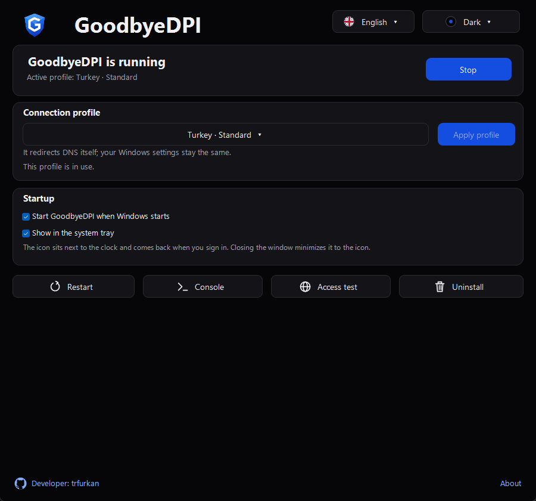
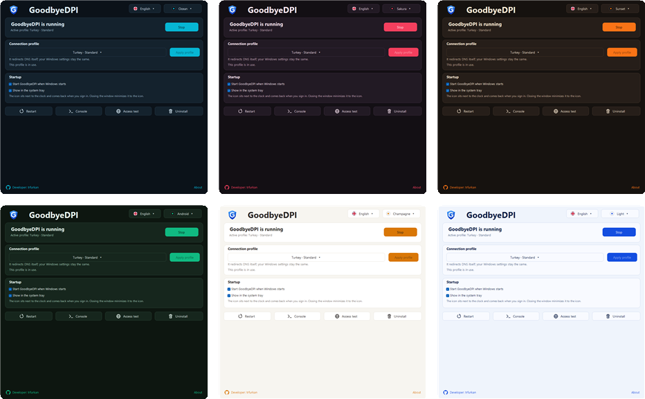
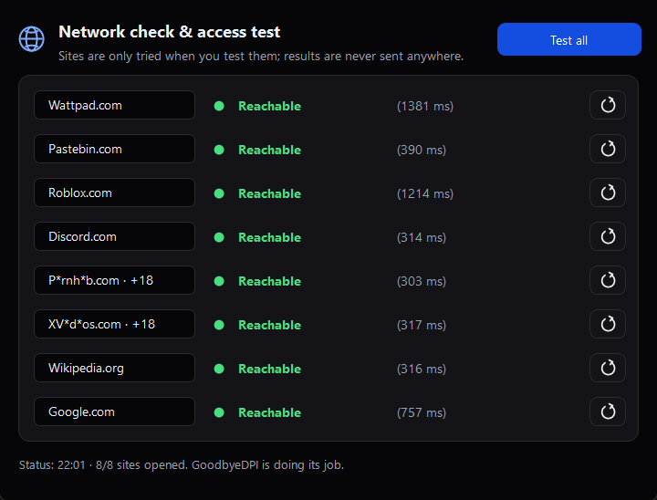

Use GoodbyeDPI in one click
GoodbyeDPI Tray is a Windows app that lets you reach Discord and blocked sites without a VPN.

What does it do?
Internet providers in Turkey block some sites through DPI and DNS. GoodbyeDPI gets around these blocks right on your computer, and GoodbyeDPI Tray makes it easy to manage.
Not a VPN
Your traffic doesn't go through another server and your IP address stays the same. No speed loss, no extra ping.
Only gets past the block
Your other connections work as usual. Games and apps use the unblocked connection too.
It has limits
It can't open sites blocked directly by IP address. The Access test shows you this.
Features
It uses the settings from GoodbyeDPI-Turkey and adds an interface you'll actually enjoy using every day.
One-click start
Start, stop, switch profiles; no administrator prompt. You can do it from the icon next to the clock too.
Starts with Windows
GoodbyeDPI runs as soon as your computer starts. You can turn this off.
Seven Turkey profiles
If one doesn't work, switch to another in one click. Your profile is kept across updates.
Access test
Tries blocked and regular sites with real connections and shows which ones open.
Seven themes
Light, Dark, Ocean, Sakura, Sunset, Android and Champagne. It can follow Windows too.
Three languages
Turkish, English and Russian. Change the language from the flag next to the theme button.
Themes and languages
Besides Light and Dark there are five colour themes. You can switch the language to Turkish, English or Russian from the flag next to the theme button.

Does it work? See for yourself
The Access test opens a real HTTPS connection to blocked sites like Discord, Roblox and Wattpad and to regular sites like Google. If the blocked ones don't open, it suggests another profile; if none open, it tells you to check your connection.

Install
One file, takes about a minute. Needs Windows 10/11 and .NET Framework 4.8, which Windows usually already has.
Download the installer- Open the installerIf Windows SmartScreen warns you, choose More info → Run anyway.
- Press InstallRead the note, tick the box and approve Windows' permission prompt.
- StartOpen the app and press Start. The app takes care of the rest.
- Run the Access testIf sites don't open, pick another profile.
FAQ
Is GoodbyeDPI Tray a VPN?
No. Your traffic doesn't go through another server and your IP address stays the same. The app only gets around your provider's DPI and DNS blocks, so there's no speed loss or extra ping like with a VPN.
Does it work for Discord?
Discord is blocked through DPI and DNS, so it works with most providers in Turkey. Which profile works depends on your provider; the app's Access test makes that easy to see.
Which profile should I pick?
Start with Turkey · Standard. If some sites don't open or are slow, try the alternatives. Alternatives 2 and 4 usually fix slowness.
Why does Windows show a warning?
The installer isn't digitally signed, so Windows SmartScreen may warn you. Choose More info → Run anyway to continue. All of the app's source code is open on GitHub.
Why do Chrome, Edge or Firefox warn me when downloading?
Browsers show warnings like "not commonly downloaded" or "may be harmful" for unsigned files that few people have downloaded yet. That means they don't recognise the file yet, not that they found a problem. In Chrome and Edge choose Keep from the menu next to the file in the downloads list; in Firefox choose Allow download. Always download the installer only from this page or the GitHub Releases page.
Can I trust the app?
All of the app's source code is open on GitHub; anyone can read it or build it themselves. It collects no personal data and only connects to GitHub once a day to check for a new version, which you can turn off in the About window. Some antivirus programs may flag WinDivert, the network driver GoodbyeDPI uses; because the driver can change network traffic, this is a common false alarm for tools like this. The app is experimental and using it is your call.
What if I already installed GoodbyeDPI-Turkey?
The installer finds the old GoodbyeDPI service and asks before taking it over. If you agree, your profile is kept and you can delete the old folder afterwards.
How do I uninstall it?
Press Uninstall in the app or remove it from Windows Settings > Apps. The app is removed completely, including its settings and logs.
For more, see the user guide (in Turkish).
About me

Hi, I'm Furkan. In my free time I build simple, user-friendly projects that make life a little easier, purely as a hobby. I make no professional claims; if something I made turned out useful for you, that makes me happy. Thanks for your interest and support!
Good to know
This app is entirely experimental and comes with no warranty. It may not work on every network and may affect your connection. The decision to use it, and any responsibility that follows, is yours alone. GoodbyeDPI Tray is an independent project, not an official release of ValdikSS/GoodbyeDPI or cagritaskn/GoodbyeDPI-Turkey.